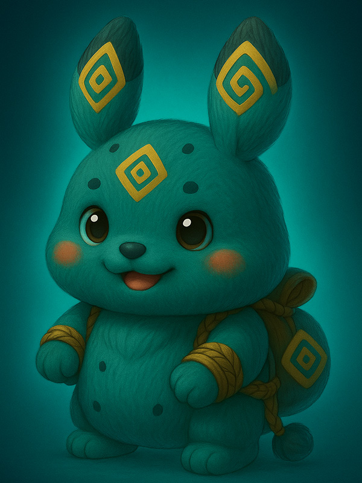

他们称我为‘兵主’，因为我脚下，尸骨如山。
在神明视凡人如草芥的时代，一个不敬天地的部落少年“尤”，亲眼目睹族人被天神的游戏所毁灭。他没有选择祈祷，而是选择了复仇。他以大地为熔炉，以百兽之骨为兵刃，用最原始的愤怒与不屈，向统治这片土地的“神”发起了凡人最初、也是最狂野的挑战。
这是一部极致硬核、血脉喷张的战争史诗，讲述了一个凡人如何一步步成长为令诸神都为之战栗的“兵主”——蚩尤。
角色速写

尤 (蚩尤)
部落少年

姬轩辕 (黄帝)
天神代理人

小芽
草灵精灵
名场面预览
“大雨滂沱的战场上，尤单膝跪地，浑身浴血，手中的兽骨巨斧已然断裂。他抬头，看着天空中那威严的神明军阵。他笑了，从怀里，小心翼翼地捧出一只瑟瑟发抖的小草灵‘小芽’，放在头顶。‘看，’他对天上的神说，‘这才是我要守护的东西。你们，不配。’”
解大为的笔记：“画腻了神仙打架，我想画一个真正‘凡人’的愤怒。蚩尤在很多故事里是反派，但在我这里，他是第一个敢对不公的神明说‘不’的人。他的武器不是神力，而是不屈的意志。当然，再硬的硬汉也得有软肋，那个叫‘小芽’的小东西，就是他比神明更‘人’的证明。”